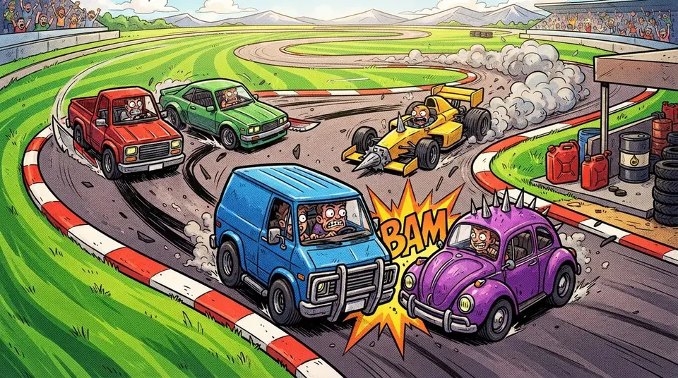

Grand Prix BastonPilotez, passez aux stands, percutez les autres

Une course de voitures vue du dessus, entre Mario Kart et course auto. Choisissez l'une des 5 voitures, toutes armées d'un pare-chocs de combat à l'avant, et ajoutez un bonus : turbo, aérodynamisme, pneus qui collent ou super coup de latte. Pilotez avec un volant à glisser qui revient au centre : trop vite dans un virage, les pneus crissent et la voiture glisse vers l'extérieur. Accélérer brûle l'essence, qui revient doucement, bien plus vite dans les deux stands à côté de la piste. Frapper vers l'avant prend une courte charge visible : celui qui ne l'esquive pas perd 20 % de sa vitesse et 15 % de son essence, puis clignote 3 s, le temps que les autres lui passent à travers. Deux tours sur l'un des 5 circuits, à 5 voitures, des robots complètent.
Jouer à Grand Prix BastonLes commandes
- Sur téléphone : Pouce gauche sur le volant à glisser (il revient au centre). Pouce droit : Accélérer (maintenu), Freiner, Frapper.
- Sur ordinateur : ← → pour tourner, ↑ pour accélérer, ↓ pour freiner, Espace pour frapper.
L'astuce
Freinez avant les virages serrés plutôt que dedans. Gardez de l'essence pour la dernière ligne droite, et passez aux stands quand la jauge rougit.
Comment jouer à plusieurs
Ouvrez Baston Arcade, choisissez « Jouer à plusieurs » puis « Créer un salon ». Vos amis scannent le QR code ou tapent le code du salon sur leur téléphone. Pas de compte, pas d'application à installer, pas de publicité. Seul, vous jouez contre des robots.